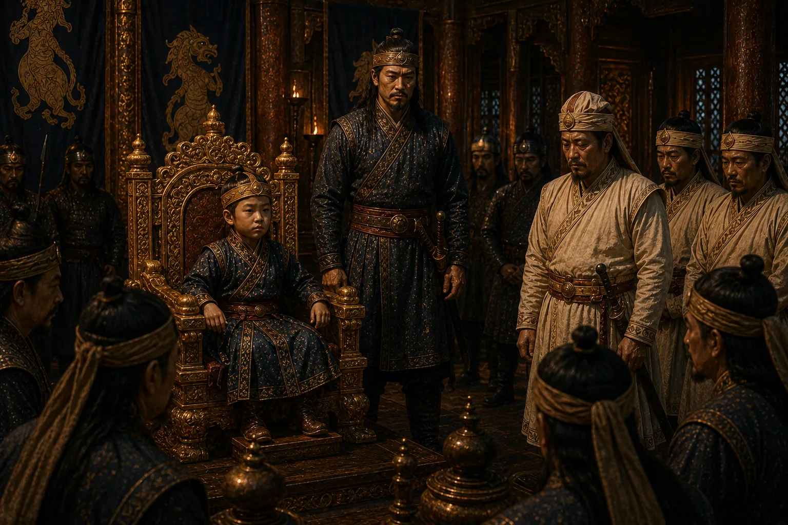

Installation of the Teenaged Boy-King Sulikphaa
1679 · Six kings in nine years

Laluk Sola murders Atan Burhagohain and crowns 14-year-old Sulikphaa (Lora Raja) to govern through terror and usurp power.
Sources have not yet been catalogued for this record.
People: Laluk Sola Borphukan, Sulikphaa (Ratnadhwaj Singha, Lora Roja)
Open this scene in the interactive archive · Follow this event on MAP